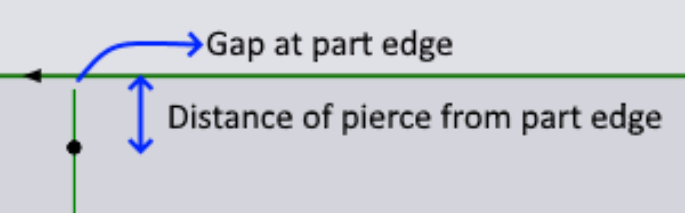

Řezy skeletu
Sheet Cutting Rules

Slice sheet skeleton: Pokud tuto možnost zapnete, TecZone Laser automaticky přidá do rozvržení vodorovné a svislé řezy s mezerami. Čáry řezů jsou přidány od levého dolního rohu plechu. Pokud čára řezu prochází některými díly, TecZone Laser to automaticky detekuje a přidá více čar řezu, aby vyřízl pouze skeletový plech, který zůstal mezi díly.
X spacing between vertical sheet cuts: Jedná se o rozestup mezi svislými čarami řezu.
Y spacing between horizontal sheet cuts: Jedná se o rozestup mezi vodorovnými čarami řezu.
Create remainder sheet: Zbytková tabule vytváří čistý řez, který odděluje zbytkovou tabuli od skeletu.
Minimum remainder sheet width: I když je výše uvedené zaškrtnuto, konečný řez bude přidán pouze v případě, že šířka nepoužitého plechu vytvořeného řezem je větší nebo rovna této hodnotě.
Final cut X offset: Jedná se o vzdálenost od nejpravějšího okraje nastrojení dílu k poslednímu svislému řezu, který vytváří zbytkový plech.
Microjoint spacing on long cuts (0 = no internal microjoints): TecZone Laser má schopnost automaticky vytvářet mikrospoje na dílech tabule. Uživatel může v nastaveních pod Sheet cutting rules specifikovat vzdálenost mezi mikrospoji. Do každého řezu, který je delší než tato délka, budou vloženy mikrospoje. Ve výchozím nastavení je tato hodnota nastavena na 0 mm, což znamená, že při řezání plechů nejsou nutné mikrospoje.
Na řezaných plechách jsou možné dva druhy mikrospojů: tvrdé a nano.
| Ve výchozím nastavení se vytvářejí tvrdé mikrospoje, pokud není upřednostňován nano. |
I u tvrdých mikrospojů dojde k zápichu na čáře. Nebude zde žádná nájezdová dráha. Pokud však LTT doporučí nájezd se sníženou rychlostí, pak bude část linie po mikrospoji řezána sníženou rychlostí.
Mark remainder sheet with size, material & thickness: TecZone Laser může označit zbytkovou tabuli názvem materiálu, tloušťkou a velikostí.
Pokud je tato možnost vybrána, bude přidáno označení, pokud jsou na rozvržení zbytkové tabule. Pokud je řez zbytkové tabule odstraněn v důsledku nějaké změny v nastavení, bude odstraněno také značení. Značení bude vždy zarovnáno podél dílu tabule a umístěno v jeho středu. Pokud není dostatek místa pro vložení textu, TecZone Laser automaticky zmenší velikost textu nebo změní orientaci označovacího textu.
Značení lze také upravit pomocí nastavení Laser Text. Změny provedené v textu, výšce a úhlu se zapamatují, ale poloha se přepočítává vždy, když se změní poloha zbývajících řezů.
Prefer remainder sheet along the longer dimension: Tato možnost bude ve výchozím nastavení zapnutá. Pokud je tato možnost zapnutá, engine pro optimální rozmístění vybere vzor s díly posunutými podél většího rozměru, pokud vzor s díly posunutými podél kratšího rozměru nešetří o 50 % více plechu než ten první. Pokud je tato možnost vypnutá, engine pro optimální rozmístění vybere vzor, který vytvoří lepší zbytkovou tabuli (na základě plochy zbytkové tabule) bez ohledu na směr optimálního rozmístění.
Process sheet cuts after all parts: Ve výchozím nastavení při sekvencování TecZone Laser zpracuje řezy před zpracováním nastrojení dílů. To je obvykle dobrý nápad, protože laserová hlava se může při provádění krájecích řezů volně pohybovat po neřezaném listu. Pokud však chcete zpracovat krájecí řezy na konci, po zpracování všech dílů, zaškrtněte tuto možnost. Následující parametry ovlivňují programování jednotlivých krájecích řezů.
Sheet cut parameters

Microjoint gap at sheet edge: Nastavte tuto hodnotu na hodnotu větší než nula, pokud chcete, aby v místech, kde se krájecí řez dotýká okraje plechu, zůstala malá část můstku.
Microjoint gap at part edge: Nastavte tuto hodnotu na hodnotu větší než nula, pokud chcete, aby v místech, kde se krájecí řez dotýká okraje dílu, zůstala malá část můstku.
Pierce distance from part edge: Jedná se o vzdálenost bodu zápichu od okraje dílu. Pokud je hodnota jiná než nula, TecZone Laser provede zápich v této vzdálenosti od okraje, poté se posune směrem k okraji, kde se otočí o 180 stupňů doprava a vrátí se zpět po stejné dráze, čímž dokončí hlavní řez.

Measuring distance from sheet edge: Pokud se na okraji plechu nevytváří drátový spoj, znamená to, že stroj musí plech proříznout až do konce. To však nelze provést s nastavenou výškovou regulací, protože by hrozilo, že obráběcí hlava za plechem spadne do lože stroje. Tento parametr určuje vzdálenost před okrajem plechu, kde je výška laserové hlavy uzamčena a regulace vzdálenosti je vypnuta. Při zahájení řezání na okraji plechu stroj skutečně dosáhne měřicího bodu definovaného tímto parametrem, změří výšku plechu, uzamkne polohu hlavy Z, vyjde z plechu, zapne laser a poté zahájí řezání s vypnutou regulací vzdálenosti, dokud znovu nedosáhne stejného měřicího bodu.
Overtravel after sheet edge: Jedná se o vzdálenost, o kterou se obráběcí hlava posune za okraj plechu při zapnutém laseru, ale vypnuté regulaci vzdálenosti. Je možné nastavit vzdálenost přesahu pro levý, spodní, pravý a horní okraj plechu samostatně.
Start by piercing on sheet: Při řezání plechu se tryska spustí dolů v dráze doběhu. Pokud není laserová hlava před opětovným vstupem do plechu zvednuta zpět nahoru, může narazit do plechu a poškodit trysku. Povolení zaškrtávacího políčka Start by piercing on sheet zabrání poškození trysky. Ve výchozím nastavení je tato možnost vypnuta. Pokud je tato možnost zapnutá, při provádění řezu od okraje plechu bude zápich proveden na plechu blíže k okraji, kromě uzamčení laserové hlavy v tomto bodě. Tím se zabrání poškození trysky.